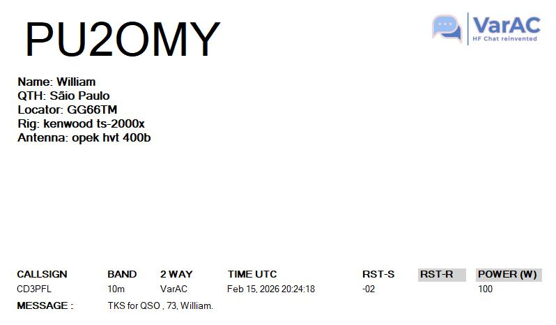
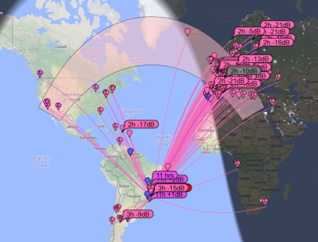
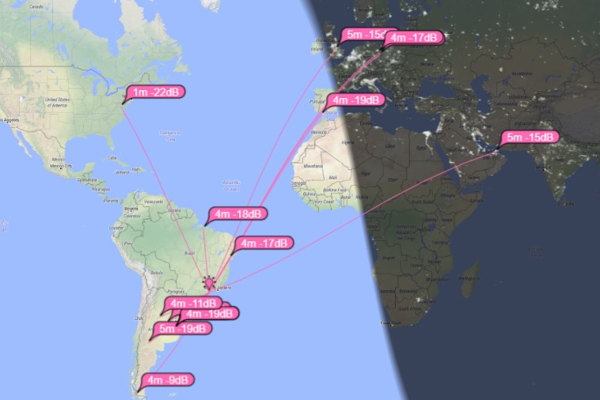

Sobre
Página dedicada ao desenvolvimento de projetos voltados ao rádio amador, com foco em soluções práticas, testes reais e compartilhamento de conhecimento técnico.
Equipamentos
Especificações
Radio: Kenwood TS-2000X Antena: Vertical V350 CAMP Modos: FT8, VarAC, SSTV e CWResultados recentes
Durante os testes, a fonte apresentou excelente estabilidade, mantendo tensão constante sob diferentes cargas. Operando com apenas 20W, meu sinal ja alcancou a India e os EUA em 10m e 12m!
| Band | Modes Tested | Power (W) | Best DX achieved | Station Status |
|---|---|---|---|---|
| 10m | FT8, VarAC, SSTV, CW | 20W | Chile (CD3PFL) | Active & Strong (SNR -02dB) |
| 12m | FT8 | 20W | India / USA | Confirmed by PSK Reporter |
| 30m | WSPR | 5W | Arkansas (USA) | Extreme QRP Success |
Latest DX Success!
My first VarAC contact with Chile (SNR -02dB) using 20W!

transmissão e recepção da minha estação em FT8
Recepção e transmissão em ft8 da minha estação registrado na faixa dos 10m

Caso de sucesso
Teste da antena v350camp com apenas 5w no modo ft8

Uma otima transmissão com apenas 5w!
Outros Projetos
📡 Antena
Construção e testes de antenas para rádio amador.
🔬 Experimentos
Medições e testes com equipamentos eletrônicos.
⚡ Eletrônica
Projetos diversos envolvendo circuitos e fontes.
Contato
Email: seuemail@email.com
Indicativo: PU2OMY